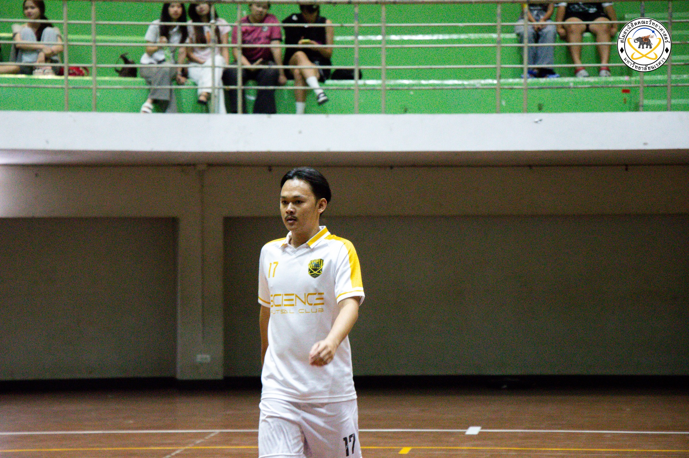
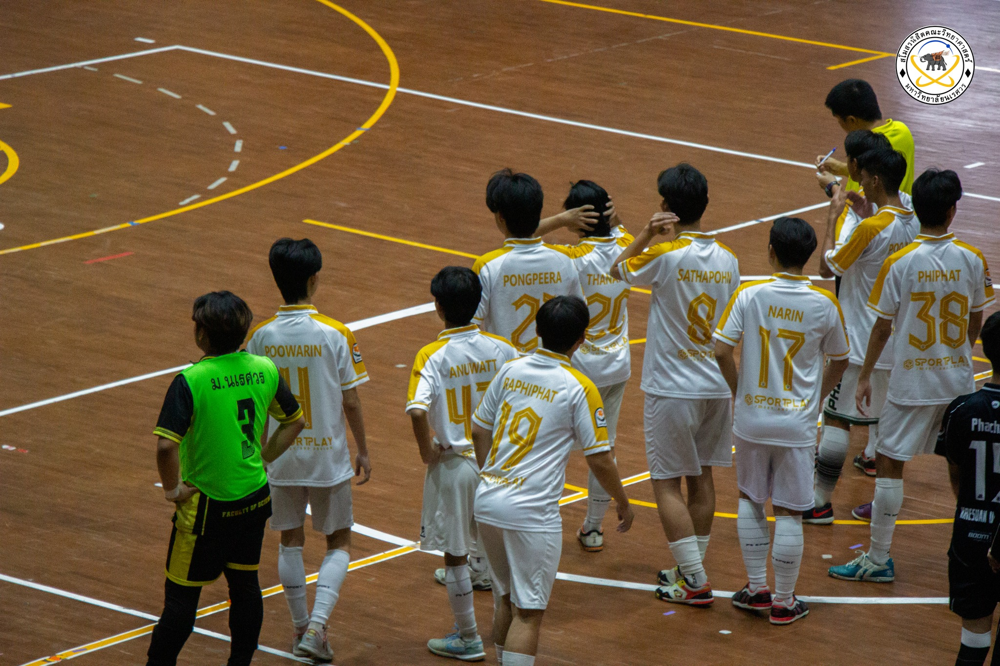
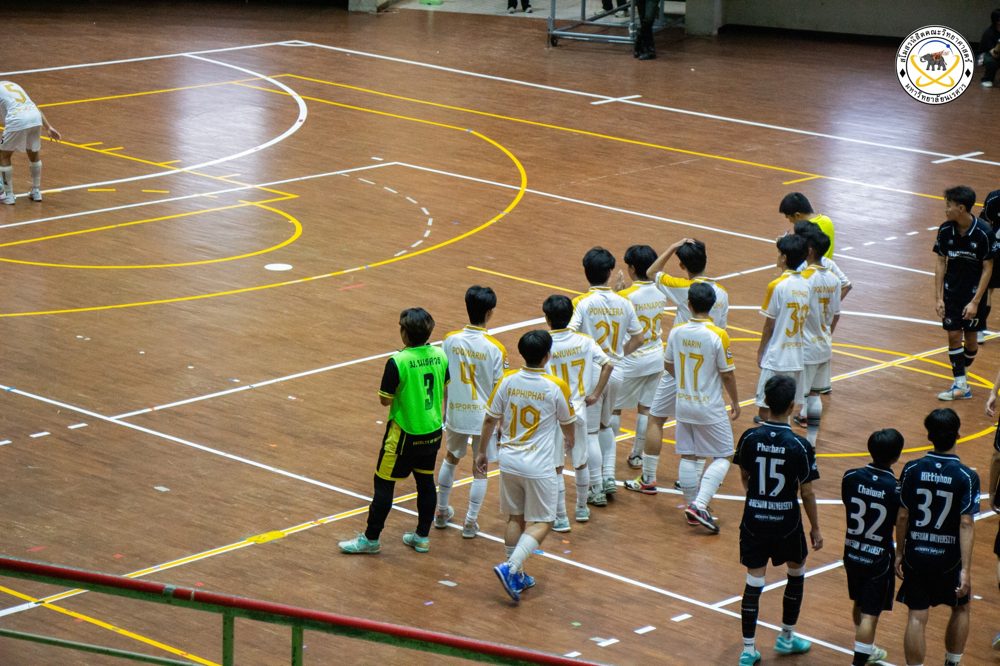
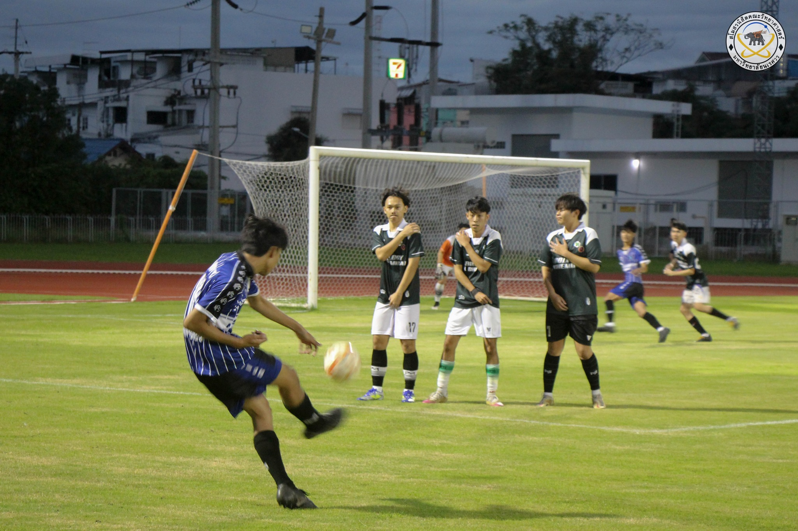
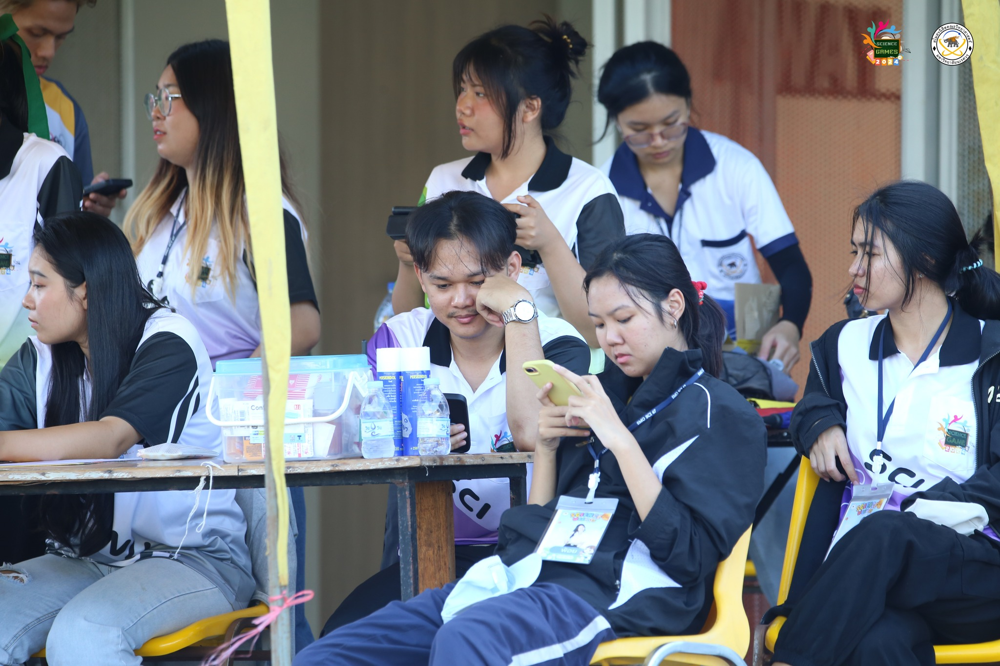
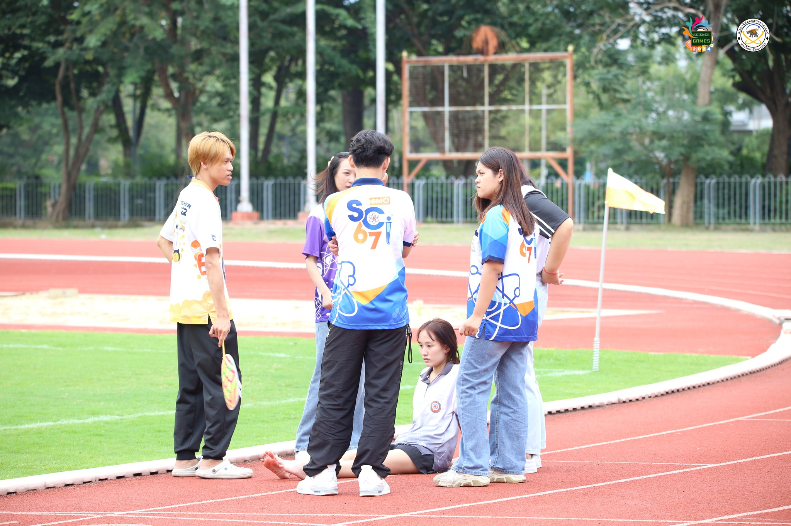
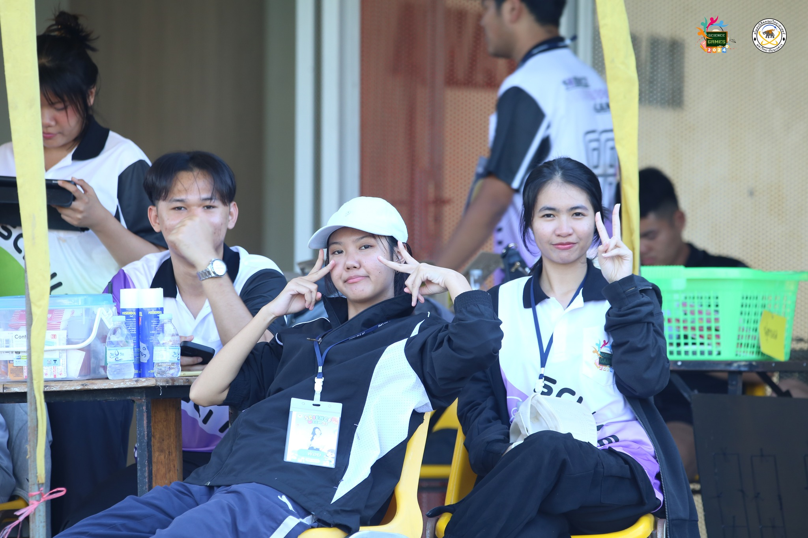
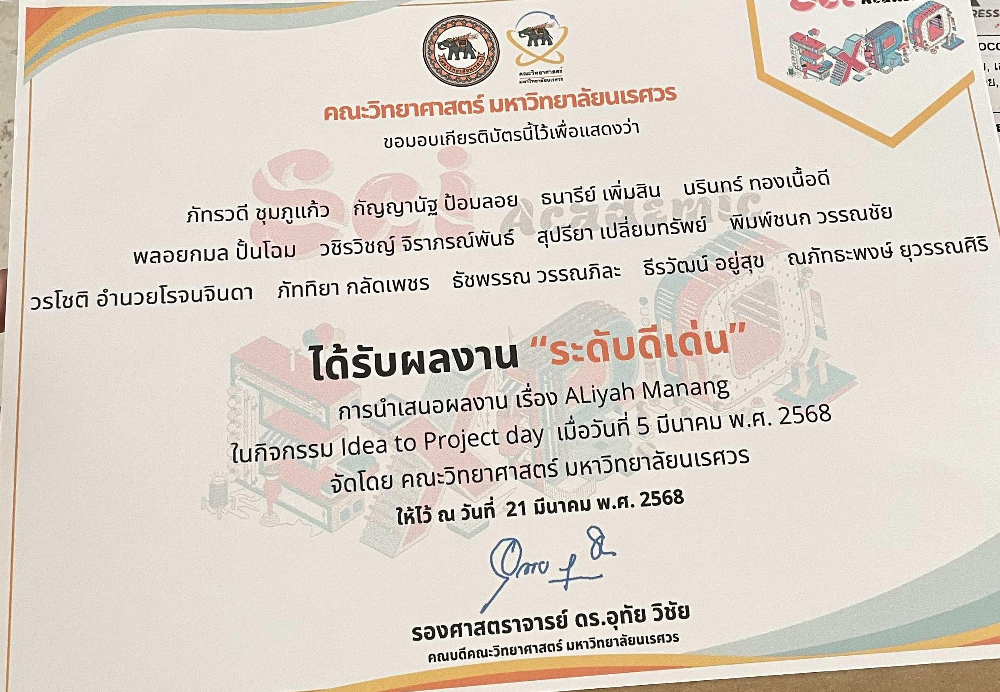

My Lifestyle & Activities
กิจกรรม
ชีวิตที่สนุกสนานและมีความหมาย
หมวดหมู่กิจกรรม
เขียนโปรแกรม
สร้างโปรเจกต์ส่วนตัว เรียนรู้เทคโนโลยีใหม่ๆ และพัฒนาทักษะ Web Dev อย่างต่อเนื่อง
ท่องเที่ยว & สำรวจ
ออกสำรวจสถานที่ใหม่ๆ ทั้งในกรุงเทพฯ และต่างจังหวัด บันทึกช่วงเวลาดีๆ ไว้เสมอ
ออกกำลังกาย
เข้ายิมสม่ำเสมอสัปดาห์ละ 3 ครั้ง วิ่งยามเช้า
ชิมอาหาร & ทำกับข้าว
ลองร้านอาหารใหม่ทุกสัปดาห์ ทดลองทำอาหารตามสูตรต่างๆ และถ่ายรูปอาหารสวยๆ
อ่านหนังสือ
อ่านหนังสือด้านเทคโนโลยี และ นิยายที่ชื่นชอบ
เกมและความบันเทิง
เล่นเกมอินดี้ในวันหยุด ดูซีรีส์ และติดตามอนิเมะที่ชื่นชอบ

สโมสรนิสิตคณะวิทยาศาสตร์ มหาวิทยาลัยนเรศวร

สโมสรนิสิตคณะวิทยาศาสตร์ มหาวิทยาลัยนเรศวร

สโมสรนิสิตคณะวิทยาศาสตร์ มหาวิทยาลัยนเรศวร

สโมสรนิสิตคณะวิทยาศาสตร์ มหาวิทยาลัยนเรศวร
SALAO GAMES & SIC GAMES
Fluid Interactivity
กีฬาเสลาเกมส์ (SALAO GAMES)
เป็นมหกรรมกีฬาภายในระดับอุดมศึกษาที่จัดขึ้นเป็นประจำทุกปีโดย
มหาวิทยาลัยนเรศวร จังหวัดพิษณุโลก
Adaptive Aspect Ratio
Sci Game งานแข่งขันกีฬาเชื่อมความสัมพันธ์ภายในคณะวิทยาศาสตร์
มหาวิทยาลัยนเรศวร
จัดขึ้นโดยสโมสรนิสิตคณะวิทยาศาสตร์ เป็นประจำทุกปี
เพื่อสร้างความสามัคคีและเปิดโอกาสให้นิสิตแต่ละสาขาวิชาได้ทำกิจกรรมร่วม

สโมสรนิสิตคณะวิทยาศาสตร์ มหาวิทยาลัยนเรศวร

สโมสรนิสิตคณะวิทยาศาสตร์ มหาวิทยาลัยนเรศวร

สโมสรนิสิตคณะวิทยาศาสตร์ มหาวิทยาลัยนเรศวร
สโมสโมสรนิสิตคณะวิทยาศาสตร์ มหาวิทยาลัยนเรศวร
Academic Showcase
เข้าร่วมจัดการแข่งขันฟุตบอล Sci Game (หรือ Science Games)
ซึ่งมักจัดขึ้นโดยสโมสรนิสิต/นักศึกษาคณะวิทยาศาสตร์

การประกวดแข่งขันนวัตกรรมเทคโนโลยี
COMPETITIONS & AWARDS
Academic Competition
เข้าร่วมกิจกรรม Idea to Project day นำเสนอผลงาน เรื่อง ALiyah Manang
และได้รับผลงานระดับดีเด่น
Resume
สถานที่โปรด
สวนสาธารณะ ริมน่าน
วิ่งออกกำลังกายยามเช้า อากาศดี บรรยากาศผ่อนคลาย
ร้านกาแฟ
นั่งทำงานนอกบ้าน Wifi เร็ว กาแฟอร่อย บรรยากาศดี
ฟิตเนส ใกล้บ้าน
เข้ายิมทอุปกรณ์ครบ ราคาคุ้มค่า
ห้องสมุดมหาวิทยาลัย
อ่านหนังสือ ทำรายงาน
งานอดิเรก & ความสนใจทั้งหมด
ทุกอย่างที่ทำให้ชีวิตมีสีสัน ผมชื่นชอบหลากหลายกิจกรรมที่ช่วยพัฒนาตนเองและสร้างความสุขทุกวัน:
Web Development
ท่องเที่ยว
ออกกำลังกาย
ถ่ายรูป
อ่านหนังสือ
ทำอาหาร
เล่นเกม
ดูซีรีส์
YouTube
คาเฟ่
ปั่นจักรยาน
ฟังเพลง